Sommaire
Je remercie le dirigeant de l'entreprise Nant'Effect pour avoir retenu ma candidature et m'avoir donné l'opportunité de découvrir le domaine des effets du spectacle.
Je remercie toutes les personnes que j'ai côtoyées pendant ma période de stage, pour leur gentillesse, leur accompagnement, leur bienveillance et leur confiance. J'ai été tout de suite bien intégré à l'équipe. Ils m'ont permis de découvrir des prestations pour des particuliers ou professionnels, de réaliser des tâches en équipe ou seul, de mettre en application des connaissances acquises dans ma scolarité. Ils m'ont aussi beaucoup appris, en prenant le temps de bien m'expliquer et de répondre à mes questions.
Je remercie plus particulièrement M. Nicolas Rouen, mon maître de stage, pour sa disponibilité et son partage. Il m'a guidé et encouragé dans mes pratiques et mes projets.
Je remercie également tous les intermittents du spectacle et les employés que j'ai pu rencontrer. Ils ont eu confiance en moi et en mes capacités. Je les remercie pour les moments d'échanges qui m'ont permis d'avancer dans mon orientation professionnelle.
Nant'Effect a été créée en 2005 et s'est rapidement spécialisée dans les effets spéciaux pour le spectacle vivant. L'entreprise a acquis un savoir-faire reconnu couvrant les artifices de scène et d'intérieur, les canons à CO₂, à confettis et à bulles, les machines à fumée lourde ou basse et les machines à mousse.
Basée près de Nantes, à Cheix-en-Retz, elle s'est imposée comme une entreprise majeure dans l'Ouest de la France. Nant'Effect collabore avec des festivals prestigieux comme le Hellfest, les Vieilles Charrues et le Festival de Poupet, et avec des artistes internationaux tels que Gojira et Lady Gaga, ainsi qu'avec de grandes salles comme le Zénith de Nantes et la Défense Arena à Paris.
L'entreprise, dirigée par Nadège et Nicolas Rouen, fait aussi de la location, de la vente, de la formation et du stockage de matériel professionnel. Son objectif reste le même depuis sa création : créer la surprise et offrir le show.
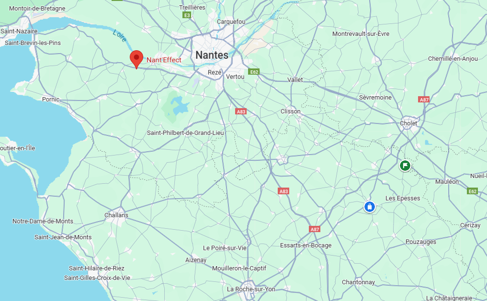
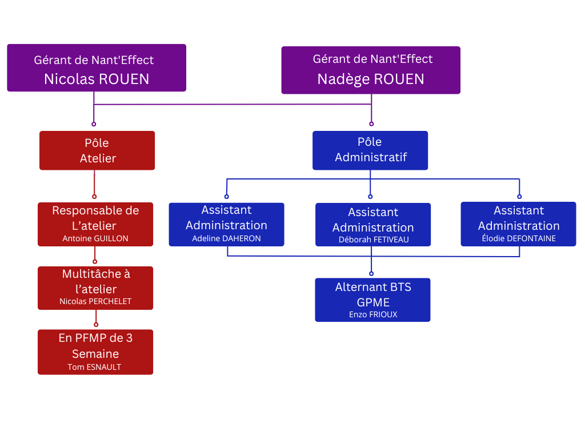
Les locaux sont découpés en trois grandes parties :
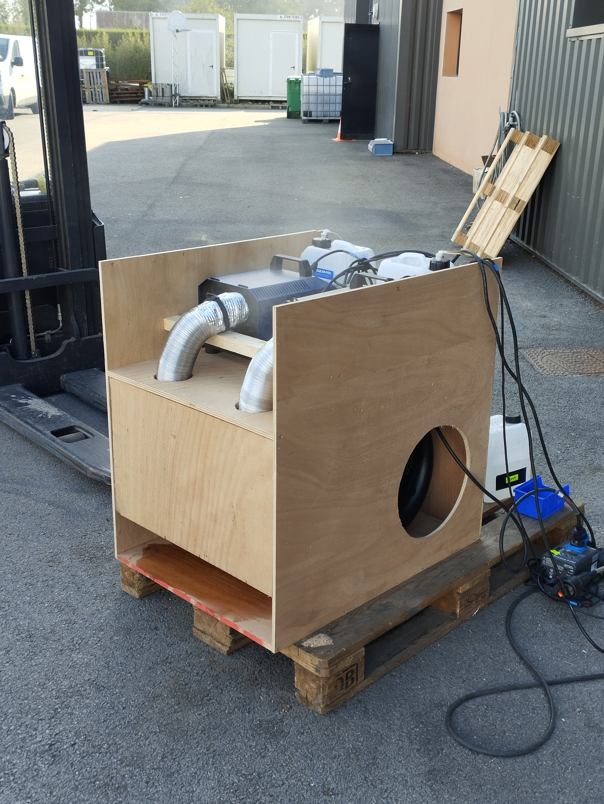
Pour la tournée du chanteur Gims, la demande était de créer un nuage de fumée qui se déploie de façon presque instantanée sur une grande zone. Ils ont créé un caisson en bois avec deux machines à fumée Viper 2.6, des tuyaux envoyant de la fumée dans un compartiment dont le fond laisse passer la sortie du souffleur FX-Blower de chez Magic FX.
Au test, le souffleur soufflait trop fort — la fumée se dispersait trop rapidement. Ils ont rendu la force du souffleur plus crescendo : la fumée sort calmement, puis le souffleur l'envoie plus loin 3 secondes après. Nous avons utilisé une console GrandMA3 branchée aux deux Viper 2.6 et à un gradateur relié au FX-Blower. L'équipe de Gims voulant 10 modules, nous en avons fait encore 9 autres, peints en noir pour qu'ils ne se voient pas sur scène.
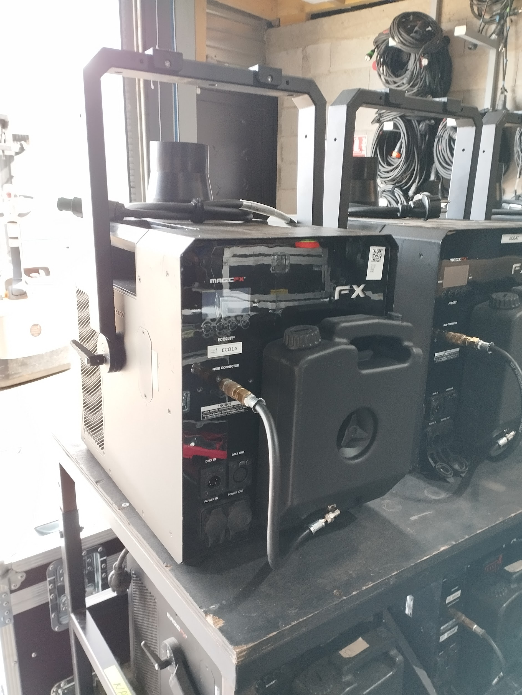
Pour le concert de Booba à la Défense Arena à Paris, on a préparé 28 machines Magic FX ECO2JET, qui servent à faire des jets de CO₂ de plus de 10 mètres. J'ai configuré chaque machine avec les deux adresses DMX. La première adresse est l'adresse d'armement : elle active la sécurité et autorise le passage du CO₂. La deuxième adresse est l'adresse de tir : elle ouvre la vanne et lance le jet. Ces deux adresses évitent qu'un jet parte par erreur avant que la machine soit armée.
On a aussi ajouté des bidons de CO₂ liquide adaptés (modèle intérieur selon la température) et des élingues et crochets pour accrocher les machines sur les ponts de scène.
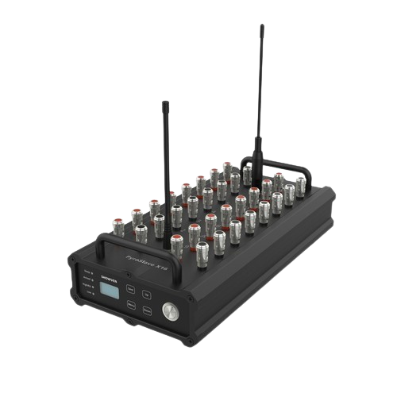
Il manquait plusieurs câbles XLR 4 points pour piloter des systèmes pyrotechniques. J'ai mesuré et coupé les longueurs nécessaires, puis mon patron a soudé les connecteurs mâle et femelle. J'ai ensuite testé l'ensemble à l'aide d'un testeur de câbles XLR.
Deux câbles présentaient un défaut : les deux fils centraux n'étaient pas correctement connectés à la prise mâle. Nous avons ouvert les connecteurs, rebranché et ressoudé les fils. Après correction, tous les câbles ont été re-testés et validés.
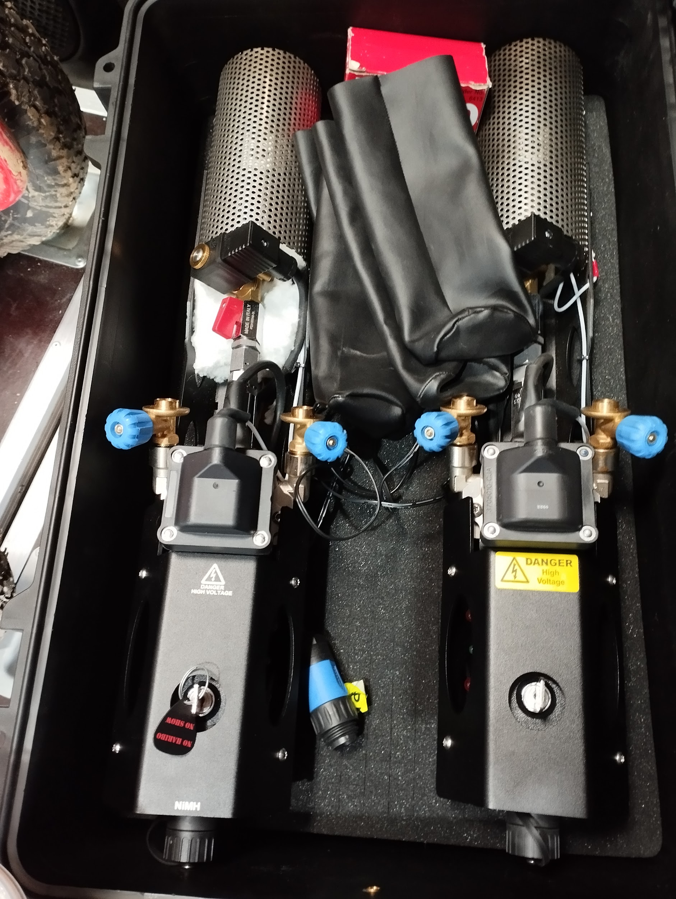
Pour l'événement GP Explorer, nous avons préparé deux pistolets à CO₂ et deux pistolets à flamme pour le show du youtubeur Joyca. Les pistolets à flamme disposent d'une double commande : clé d'armement + appui simultané sur deux boutons. Ils fonctionnent avec des cartouches de propane et peuvent atteindre environ 525 °C.
Les pistolets à CO₂ utilisent du dioxyde de carbone liquide sous pression pour créer un effet de fumée froide. Reliés à une bonbonne par un tuyau haute pression, le pistolet agit comme un interrupteur.
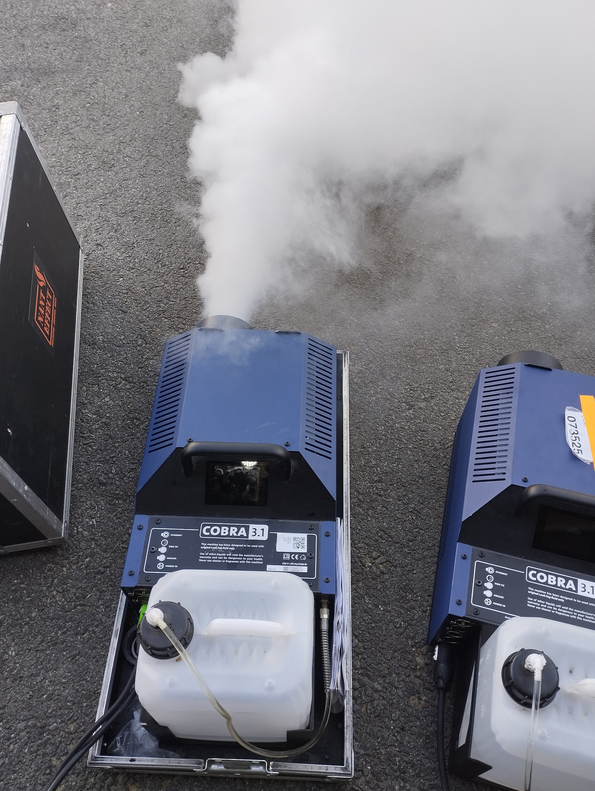
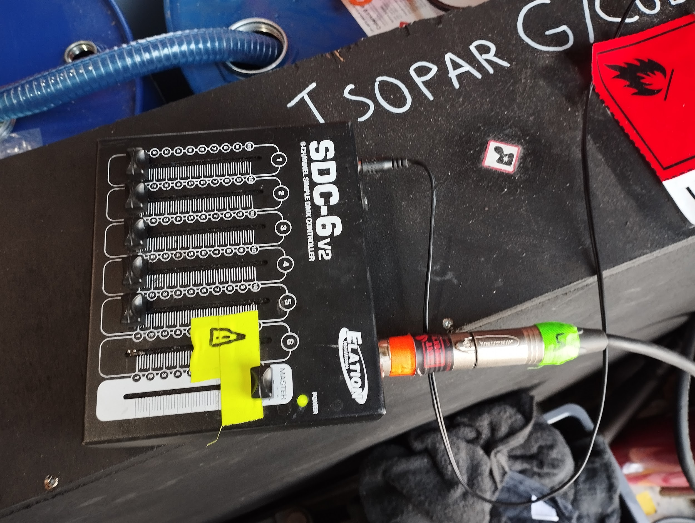
Une machine à fumée Cobra défectueuse nous a été rapportée après le défilé de L'Oréal — elle ne produisait aucune fumée tant que le fader n'était pas poussé au-delà de 30 % sur la console.
À l'atelier, nous l'avons branchée à une mixette DMX 5 voies et avons pris une seconde Cobra en parfait état pour comparer. La machine défectueuse restait totalement inactive malgré le signal DMX. Conclusion : dysfonctionnement interne, probablement au niveau du circuit de chauffe ou du module de commande. La machine a été mise au SAV.
J'ai préparé une Viper 2.6 pour une association : inspection visuelle complète (boîtier, câble, mixette DMX, câbles), contrôle du niveau de liquide, mise sous tension, test de chauffe et production de fumée à différents niveaux. J'ai aussi vérifié le fonctionnement en DMX et en contrôle local. La machine a été rangée dans un flycase avec du liquide et une mixette annotée d'explications claires.
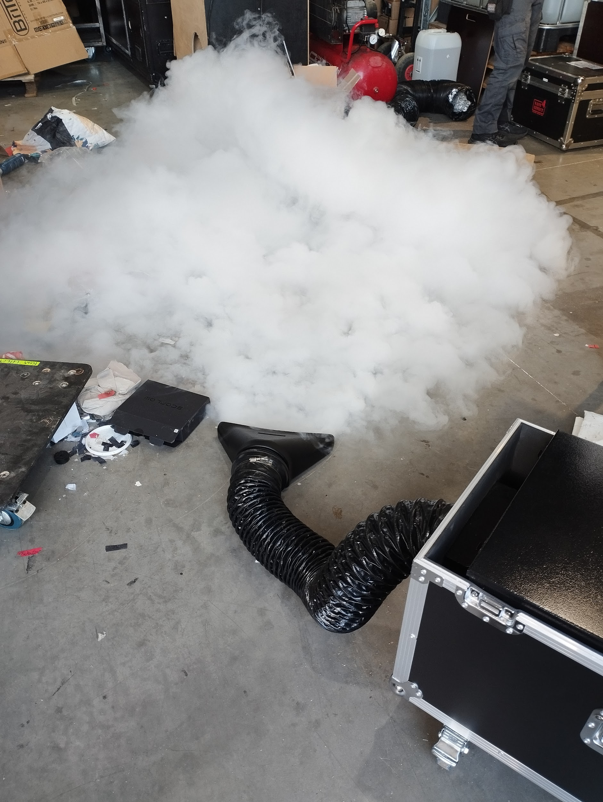
Préparation de machines à fumée lourde pour la tournée de Jean-Louis Aubert. Chaque machine vérifiée visuellement puis branchée en DMX. Particularité : la fumée reste au sol grâce à un refroidissement par eau. Tests à différents niveaux de puissance pour évaluer la quantité, la répartition et la régularité de la fumée au sol. Après validation, les machines ont été nettoyées, emballées sur palette et expédiées.
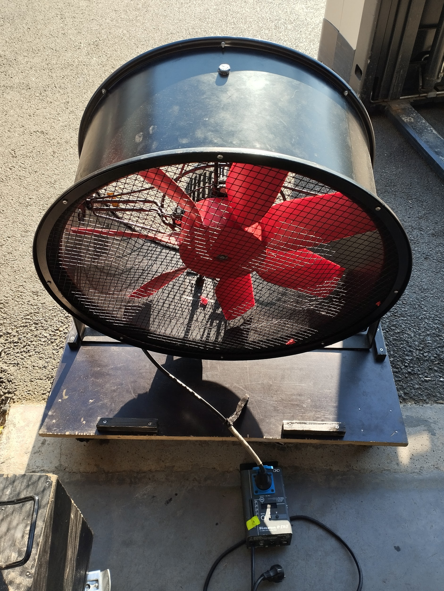
Préparation d'un ventilateur couplé à un gradateur Simoun, utilisé comme variateur de vitesse contrôlable en DMX ou manuellement. Ce principe est souvent mis en place pour gérer la diffusion de la fumée ou faire voler un objet. Le Simoun ajuste la vitesse en régulant la tension électrique envoyée au ventilateur. Vérifications faites avant envoi : câblage, fonctionnement du variateur, comportement à différentes vitesses.
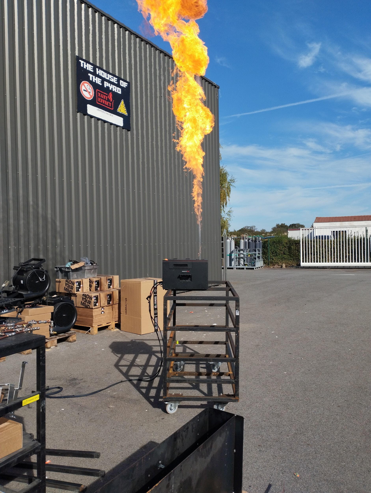
Test et diagnostic d'une Flame blazer signalée défectueuse. Nous avons branché la machine à une mixette DMX, configuré l'armement sur le canal 1 et le déclenchement sur l'adresse 5. Après mise sous tension, les flammes se sont déclenchées normalement dès les premiers essais, sans retard ni coupure. Après tous les tests de sécurité (boîtier, raccords, câblage, stabilité du tir), aucun défaut n'a été constaté. La machine a été remise en état de service.
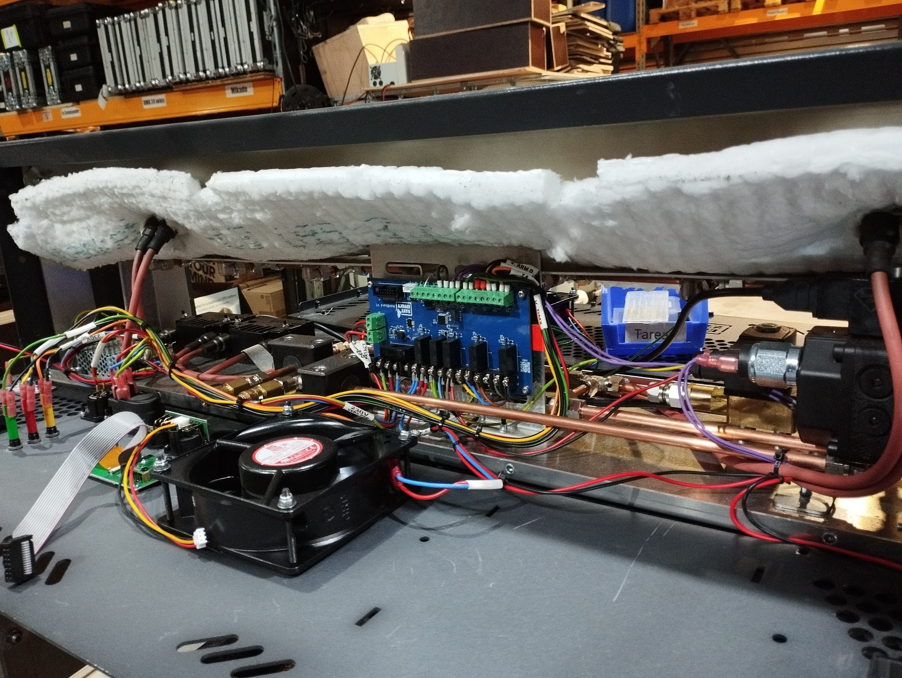
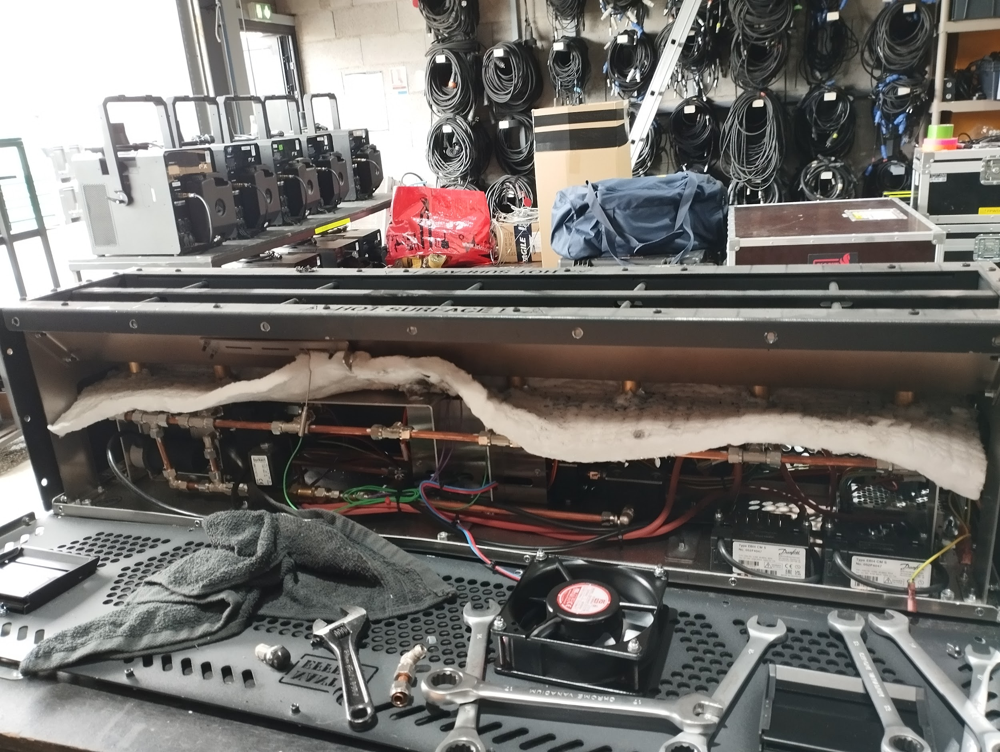
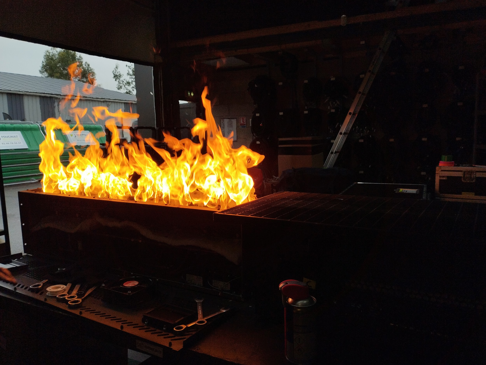
Réparation de plusieurs rampes flammes pour la tournée de Julien Doré. Sur trois rampes, les tuyaux de liquide étaient fissurés — nous les avons remplacés par des tuyaux neufs adaptés à la machine.
Sur une autre rampe, le voyant FX Arm ne s'allumait pas. En ouvrant le boîtier, on a trouvé un câble principal pincé créant un court-circuit qui bloquait tout le système d'armement. Nous avons réparé le câble en enlevant la partie endommagée et en isolant correctement les fils. Nous avons fait appel à Martin, l'intermittent qui avait conçu ces rampes, pour les tests de sécurité et la vérification de mise sous pression.
Pour la tournée festival de Booba en 2025, j'ai participé à la préparation du matériel pyrotechnique avec Nant'Effect. L'entreprise était responsable de toute l'installation pyrotechnique, avec 8 machines à flammes Flame blazer ainsi que tout le matériel de sécurité et de contrôle. Quand Nant'Effect fournit du matériel contenant des flammes, elle fait toujours appel à un intermittent spécialisé pour superviser la tournée et assurer la sécurité sur chaque date.
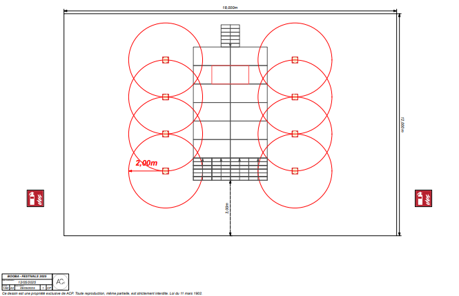
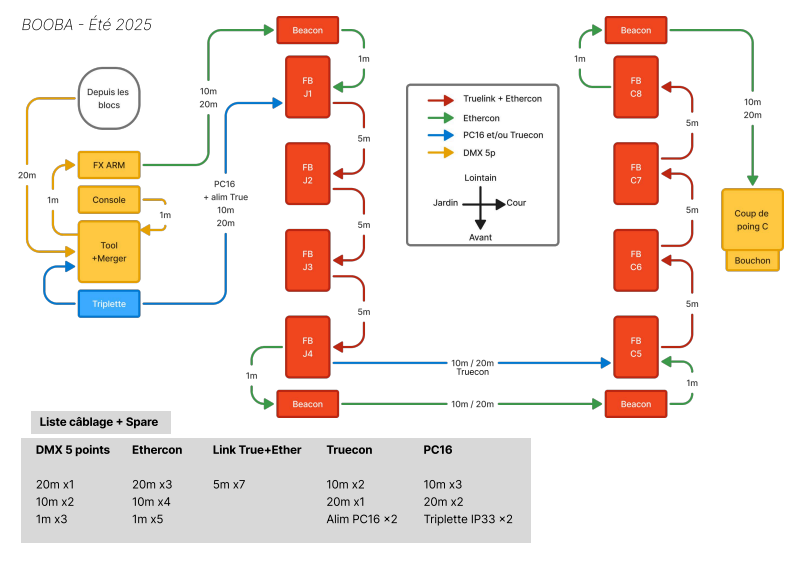
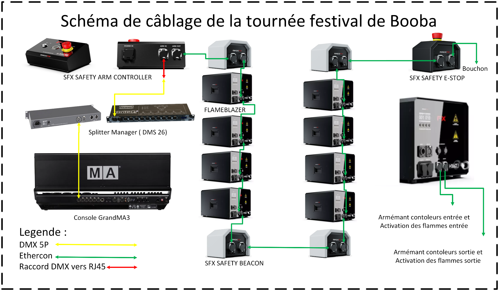
Le système repose sur un réseau de sécurité SFX câblé en RJ45 qui relie tous les équipements. Ce réseau transmet à la fois le signal d'armement, de désarmement et de commande. La console GrandMA3 envoie les signaux DMX512 vers un splitter DMS 26, qui répartit le signal vers plusieurs zones.
La chaîne SFX est composée de :
L'architecture repose sur deux logiques : une ligne de commande artistique DMX512 et un bus de sécurité SFX indépendant, physiquement sur le même câble RJ45 en Ethercon CAT6 (10 gigabits, 250 MHz, impédance 110 Ω).
| Broche | Couleur | Signal |
|---|---|---|
| 1 | Blanc et Orange | DMX+ |
| 2 | Orange | DMX− |
| 3 | Blanc et Vert | SFX Arm |
| 4 | Bleu | SFX status |
| 5 | Blanc et Bleu | Alim (non utilisé) |
| 6 | Vert | SFX trigger |
| 7 | Blanc et Marron | Pas utilisé |
| 8 | Marron | Pas utilisé |
La console GrandMA3 émet un signal à 44,1 Hz. Chaque trame DMX contient 512 canaux de 8 bits. Chaque Safety Beacon renvoie entre 4,75 et 5,00 V lorsque la ligne est armée, et chute à 0 V en cas de désarmement. Une anomalie est identifiée en moins de 10 ms.
La GrandMA3 peut gérer jusqu'à 250 000 canaux DMX virtuels en convertissant ses signaux en paquets IP via Ethernet. Chaque paquet est envoyé à 44 Hz. Sur la liaison vers le splitter, seules les broches 1, 2 et 3 sont utilisées (masse, DMX−, DMX+). Le format symétrique limite les interférences électromagnétiques.
Le splitter DMS 26 dispose de 6 sorties DMX isolées électriquement, supportant jusqu'à 300 mètres sans dégradation. Chaque port est équipé d'un transformateur d'isolation supportant 2 500 V en crête. Des résistances de terminaison automatiques de 120 Ω évitent les réflexions de signal.
Les Flame blazer utilisent un liquide (Isopar L), hautement inflammable. Un contrôle visuel complet est obligatoire avant toute mise en service. Distances de sécurité à respecter : 2 m latéraux et 5 m verticaux minimum entre la sortie de flamme et toute personne.
L'ensemble est protégé par un dispositif différentiel 30 mA. Toutes les masses métalliques sont connectées à la terre principale.
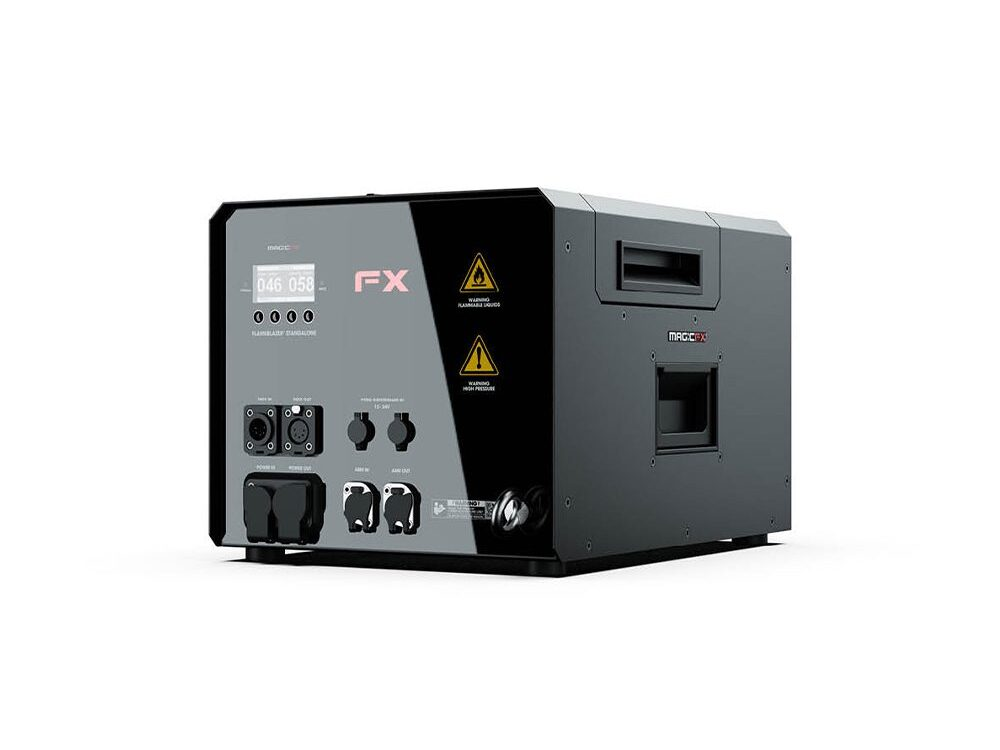
La Flame blazer produit des jets de flammes jusqu'à 6 mètres de hauteur en 0,1 à 3 secondes. La température à la base atteint 1 200 °C, le sommet se stabilise autour de 700 °C. Chaque tir consomme environ 0,03 ml de liquide et 1,2 joule d'énergie électrique.
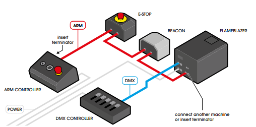
La Flame blazer est pilotée par un signal DMX512 à 250 kbit/s. Le DMX est unidirectionnel. En cas de perte de signal, la machine garde sa dernière valeur reçue — risque de maintien involontaire du canal de déclenchement.
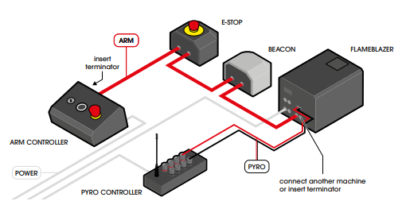
La Flame blazer fonctionne sans lien DMX. Le SFX Arm Controller indique si le système est armé (24 VDC présent) ou désarmé (tension coupée). Une coupure sur la ligne SFX désarme instantanément le circuit pyrotechnique. Mode utilisé dans les shows à haut risque pour isoler totalement le DMX.
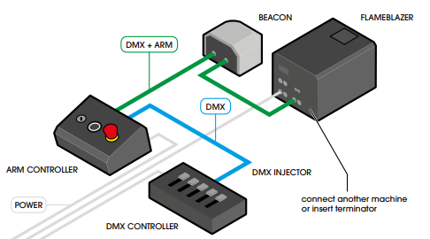
L'option la plus sûre et la plus utilisée en production. Le module ne peut s'activer que si la tension SFX est présente ET la commande DMX reçue simultanément. Un comparateur vérifie que la tension SFX est supérieure à 8 V DC, avec un microcontrôleur DMX qui valide la trame à 44 Hz.
| Critère | Flame blazer | Maître Salamander | Sparkular Circle Flamer II | Raison du choix |
|---|---|---|---|---|
| Hauteur de flamme | Jusqu'à ~10 m | 6–8,5 m | Jusqu'à ~12 m | Haut impact visuel sans complexité excessive |
| Réactivité | Allumage rapide, double ignition | Robuste mais montée en pression plus lente | Très haut de gamme, plus complexe à synchroniser | Idéal pour une tournée où la synchronisation est cruciale |
| Sécurité & tournée | SFX Safety Arm intégré, tilt sensor, boîtier étanche | Bonne sécurité mais modules supplémentaires possibles | Très haut de gamme, logistique plus lourde | Meilleur compromis sécurité / praticité |
| Coût & logistique | Matériel pro conçu pour tournée | Généralement plus cher | Très haut de gamme, coût importants | Bon équilibre budget / performance |
| Maintenance | Marque connue, pièces accessibles | Fiabilité élevée mais réseau de soutien peut varier | Support très spécialisé | Meilleure accessibilité pour tournée |
Ces trois semaines passées ont été très remplies professionnellement, humainement et personnellement. Elles m'ont permis d'avancer sur mon projet professionnel dans les métiers de l'audiovisuel et d'en apprendre davantage.
Ce stage m'a apporté du nouveau langage technique et des compétences dans les effets du spectacle et du monde de l'audiovisuel en général. J'ai développé ma patience, ma cohésion de groupe et ma capacité à apprendre. J'ai su adapter mes EPI (gants, chaussures de sécurité, protection auditive, tenue adaptée) en fonction de l'activité. Mes horaires étaient 9h–17h, mais on peut être amené à travailler un jour de congé ou un soir si une prestation est programmée.
Ce que j'ai apprécié, c'est d'être dans une entreprise conviviale et de participer à des activités très variées qui me correspondent. J'ai préféré la diversité des activités chez Nant'Effect et j'ai bien aimé être plus autonome que dans les autres stages.
Ce que j'ai moins apprécié, c'est d'avoir des moments de creux puis aussitôt un grand rush. J'ai compris que ce travail demande un investissement important, de l'énergie et des efforts physiques réguliers.